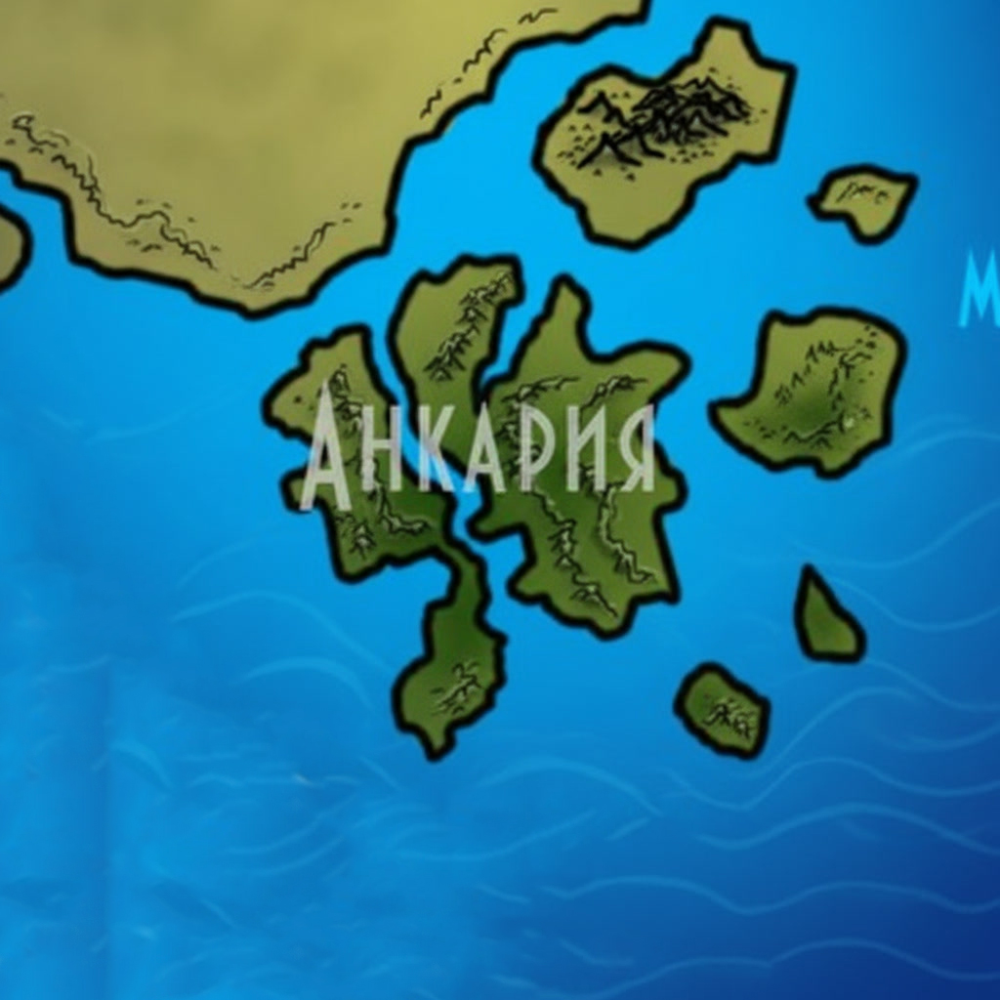

Анкария
Анкария — остров, который с виду кажется простоватым, но это не так. Из-за корней и стволов древа остров превращается в непроходимые джунгли. Здесь почти нет впадин — корни вниз не растут, — зато равнины встречаются по всему острову, а на востоке естественным путём образованы горы-скалы.
Карта Анкарии
Древо, корни-лабиринты, джунгли и скалы
images/ankaria-map.jpgРекомендуемый размер:
1200 × 900 px (4:3)

Составлена по рассказам юваров и неклюдов, что живут под ветвями Анкарийского древа. Там, где линии расходятся с корнем, — верьте корню.
Рельеф
С виду остров кажется простоватым, но это не так. Из-за корней и стволов древа остров становится непроходимыми джунглями. Впадин, как таковых, нет, потому что корни вниз не растут. Впадины можно найти только там, где сохранилась земля. Равнины встречаются по всему острову. Северная часть острова полнится землёй — там и построены города. Южная часть от северной мало чем отличается. На востоке острова естественным путём образованы горы-скалы.
Под верхними корнями Анкарийского древа имеются пещеры с хрустально чистыми озёрами. Корни придают впечатление лабиринта. Это последнее место на Анкарии, где так много земли. Она пропитана питательными веществами и минеральными солями. Подземные озёра имеют пресную воду.
Водные ресурсы
На острове почти нет воды. Вода располагается только на земляных частях острова, и то в небольшом количестве. Пресная вода на этом острове только в озёрах, реки всегда солёные, потому что берут начало из бурного моря. Также имеются подземные озёра, но путь туда знают лишь жители Анкарии. Корни древа настолько велики, что питаются водой из моря.
Полезные ископаемые
Анкария не обладает никакими полезными ископаемыми.
Климат
Северная часть острова имеет совсем обычный климат. Зимой — снег, летом — жара. Часть, покрытая древом, имеет, наоборот, очень странный климат. Ветра совсем нет, повышенная влажность и духота. Только если забраться на самый верх, можно почувствовать то, что творится снаружи. Многие не могут долго пробыть «внутри» и просто теряют сознание или умирают.
Животные и растения
Флора и фауна Анкарии разнообразны: здесь встречаются как растения, совсем не требующие влаги, так и довольно прихотливые. Самым красивым является «Цвет благого древа» — цветок размером с человеческую голову, светящийся чуть бирюзовым цветом. Это чудодейственное растение, способное излечить тяжёлые раны и нейтрализовать сильные яды. За срубание этого цветка у неклюдов есть особое наказание, которое даже озвучивать страшно, из-за его жестокости.
Основная часть суши покрыта джунглями и большим количеством низких деревьев (4–6 метров). Также иногда встречаются хищные растения, готовые сожрать любого, кто посягнёт на их территорию. Эта местность из-за очень большого магического фона очень населена голубыми грибами, которые в основном водятся в подземном лабиринте корней. Самая насыщенная «сталь-древом» территория: сталь-дерево также охраняется, но есть допустимые нормы добычи его плодов и коры.
Животные в основном гипертрофированные: можно встретить хомячка размером с собаку или кабана размером с человека. Но не все виды животных так изменились — встречаются стандартные кабаны, олени, лани и особое животное, выведенное юварами для охраны и охоты. «Кальроты» — хищные ящеры с игольчатым покрытием по всей спине и бронированным брюхом, способные разорвать своей мощной пастью латника как кусок бумаги. Без приказа хозяев не нападают, в дикой природе Анкарии не встречаются.
Население и города
Население Анкарии в основном состоит из юваров и неклюдов. Города расположены в зависимости от вида и способностей жителей. Летающие живут в поселениях на ветвях древа. Ходящие живут в природных городах либо на земле, либо в системе лабиринтов-корней. Все города расположены под ветвями древа, дальше идёт нежилая полоса джунглей. Между собой они не слишком дружны, бывают редкие стычки, но в основном царит мир и процветание.
К другим расам жители Анкарии относятся не слишком приветливо: терпят, но не более того. Города в основном охраняются кальротами, но и сами жители сражаются вполне неплохо — частые стычки заставляют держать себя в форме.
История
Анкария появилась чуть позднее Эльхара, от этого история юваров и неклюдов довольно насыщенна событиями. Самое страшное из них — «Хладная война», война между юварами и неклюдами, длившаяся порядка двенадцати лет. Половина народа погибла в то время, множество полководцев погибло, и было принято решение о мире, чтобы не произошло полного уничтожения рас как таковых.
Повлияли на это два героя обоих рас, решивших всё поединком. Победил герой юваров — Эргулан. Погибший неклюд — Латуваг — был старшим сыном Вождя неклюдов. После его смерти было решено заключить «Зверниский Договор», благодаря которому расы стали равны.
География Мериона · Остров Анкария